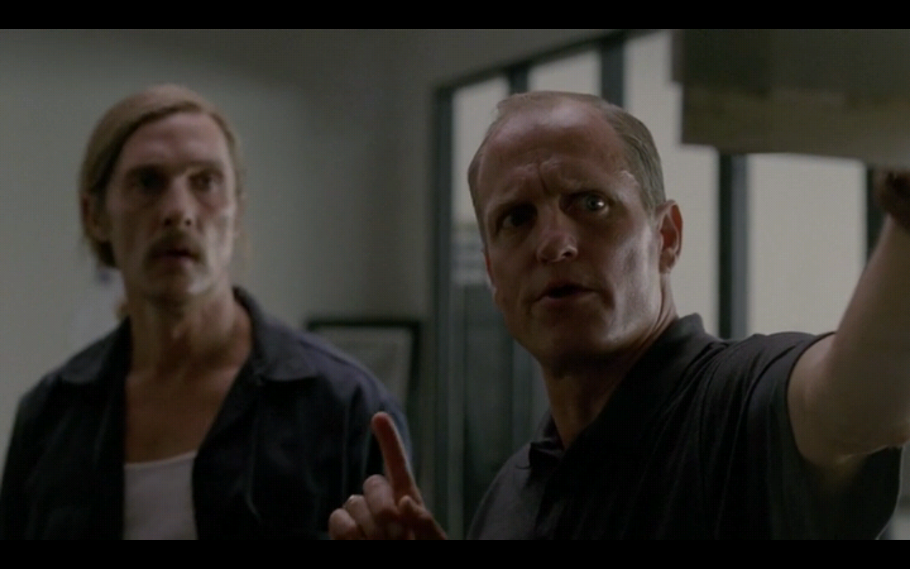

Spoilers for the season finale of True Detective in the below review. UK fans will want to stop reading at this point; my notes on episode 3 - which has just aired on Sky Atlantic - can be found on tumblr here.
There is a debate to be had around emotional versus structural pay-off in dramas. It's something I myself have hand-waved before, most noticeably in Bron | Broen where it was apparent early on that even though there was plotwork, it was mostly nonsense, and the characters were going to carry that show from the beginning. But I have been watching True Detective with the understanding that at the end of its eight episodes, there would be narrative cohesion with the rest of the season, and that the story that was started in episode one would come to a natural and logical conclusion in episode eight.
This did not happen.
There is a benefit to not spelling out every detail: the audience is intelligent and can infer as much from show as they do from tell. But when the mechanism which draws the viewer in is a mystery narrative, it is only fitting that the mystery be resolved. Whilst True Detective offered up the who of whodunnit, it failed to answer some very basic questions, focusing instead on Marty and Rust's relationship. This is a police partnership the likes of which have been seen before, and is not a new story. There is something pleasing about the pair's antagonism, but it should not have been the foundation of this story, which ultimately became about Rust's long road to salvation.
Here are some questions that I would have like to have had answered: why was Dora Lange posed in the way that she was posed? Why was it important to Errol Billy Childress that these particular women were exposed in the way that they were? What was the connection between these women and the paedophilia? How complicit were the Tuttles in Childress' perversity? Did they know, or were they only responsible for their depraved understanding of Courir de Mardi Gras? What effect will the exposure of Childress' crimes have on the "Santoria voodon shit" that was the foundation for the paedophilia circle? I can understand as well as the next person that not all questions posed need answers. The Yellow King was part of a constructed mythology, but that mythology is never interrogated, only displayed, which in turn was just an excuse for the sensationalism of sexual violence against women. But why just women when the paedophilia was committed against boys as well as girls? In this article from Vulture, the set designers revealed that Nic Pizzolatto asked for the Devil's Trap/Nest structures to
have a spiral motif and be able to stand on their own. […] They decided on a tripod structure, which, if laid on its side, would have a spiral naturally build in from the bottom. “We were also told all of this artwork is the killer’s way of ascension to reach this spiritual plain that he has in his mind,” [production designer Alex] DiGerlando said.
source: Vulture, 3 March 2014
It was not vital to know what the Devil's Nests represent, only that they form part of the mythology, but when so much thought had clearly gone into them, why was this not made open to the audience? My hope had been that in paying attention to the intricacies of the narrative format - which made way for unreliable narration in scores - that the viewer would be able to go back and point out the bones of plot and follow it through end to end. This is not possible, and this is the downfall of most modern detective stories: the story fails to deliver on its basic premise in a logical manner. (See: Broadchurch as another example of this lazy story-telling format.)
This is not to say that the journey was not compelling, only that there was nothing novel about it, and to suggest otherwise indicates a lack of knowledge of True Detective's historical context. Rust and Marty are archetypes; we've seen them time and time again, and no doubt television and film will continue to spout their stories at us for the rest of time. But what Nic Pizzolatto had teasingly offered was a story that was both complex and circular: one which returned upon itself and led the viewer through. The finale was more interested in bringing Rust through, and this, I feel, was a mistake. We are not in need of more redemption stories for the select few. We were in need of justice for Dora Lange and Kelly and all the women and children hurt by Childress. But Nic Pizzolatto didn't care about Childress' victims, only about his heroes, and that is where True Detective fails.